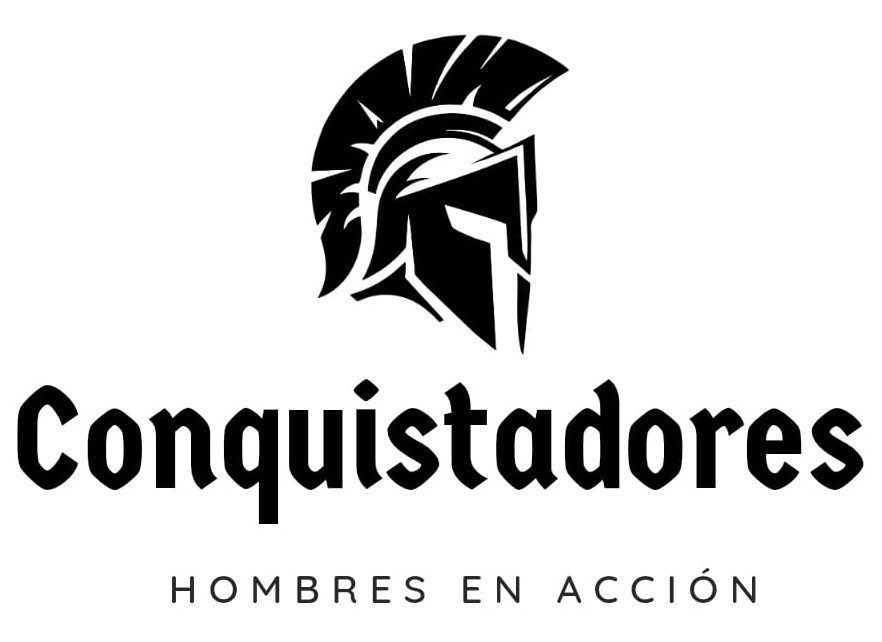

Conquistadores
Hombres en Acción
Texto base
Josué 1:1–9«1Aconteció después de la muerte de Moisés siervo de Jehová, que Jehová habló a Josué hijo de Nun, ayudante de Moisés, diciendo: 2Mi siervo Moisés ha muerto; ahora, pues, levántate y pasa este Jordán, tú y todo este pueblo, a la tierra que yo les doy a los hijos de Israel. 3Yo os he entregado, como lo había dicho a Moisés, todo lugar que pisare la planta de vuestro pie. 4Desde el desierto y el Líbano hasta el gran río Éufrates, toda la tierra de los heteos, hasta el gran mar donde se pone el sol, será vuestro territorio.
5Nadie te podrá hacer frente en todos los días de tu vida; como estuve con Moisés, estaré contigo; no te dejaré, ni te desampararé. 6Esfuérzate y sé valiente; porque tú repartirás a este pueblo por heredad la tierra de la cual juré a sus padres que la daría a ellos.
7Solamente esfuérzate y sé muy valiente, para cuidar de hacer conforme a toda la ley que mi siervo Moisés te mandó; no te apartes de ella ni a diestra ni a siniestra, para que seas prosperado en todas las cosas que emprendas. 8Nunca se apartará de tu boca este libro de la ley, sino que de día y de noche meditarás en él, para que guardes y hagas conforme a todo lo que en él está escrito; porque entonces harás prosperar tu camino, y todo te saldrá bien.
9Mira que te mando que te esfuerces y seas valiente; no temas ni desmayes, porque Jehová tu Dios estará contigo en dondequiera que vayas».
14Hermanos míos, ¿de qué aprovechará si alguno dice que tiene fe, y no tiene obras? ¿Podrá la fe salvarle? 15Y si un hermano o una hermana están desnudos, y tienen necesidad del mantenimiento de cada día, 16y alguno de vosotros les dice: Id en paz, calentaos y saciaos, pero no les dais las cosas que son necesarias para el cuerpo, ¿de qué aprovecha?
17Así también la fe, si no tiene obras, es muerta en sí misma.
«Yo conozco tus obras, que ni eres frío ni caliente. ¡Ojalá fueses frío o caliente!».